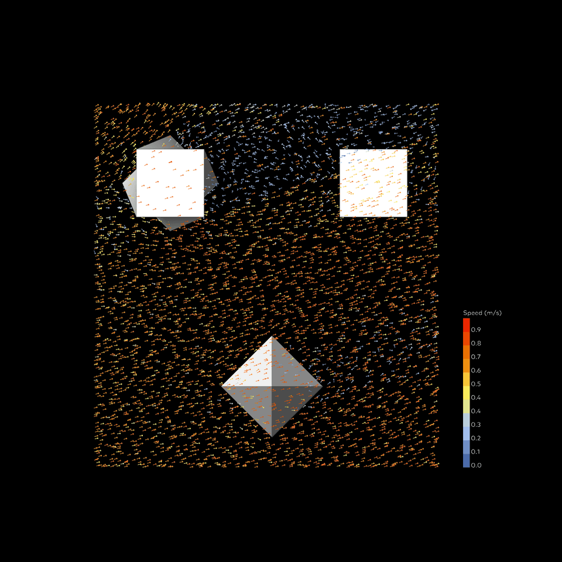
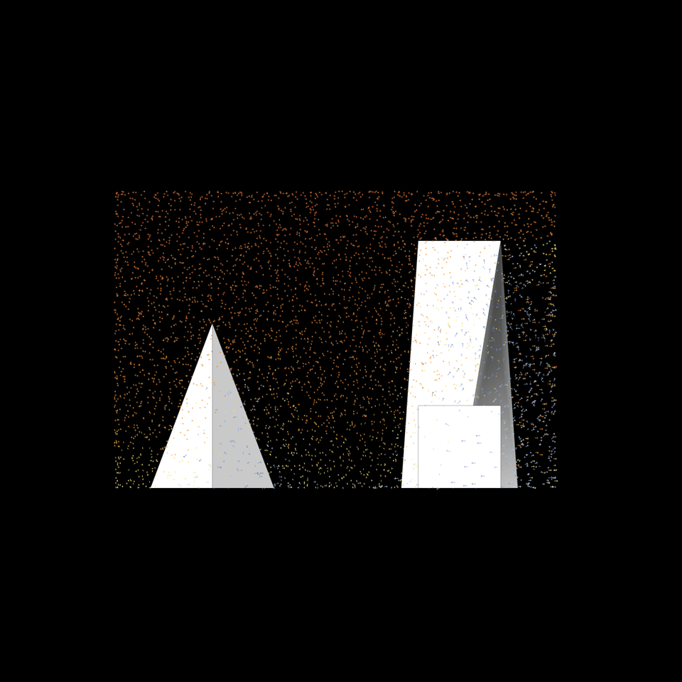
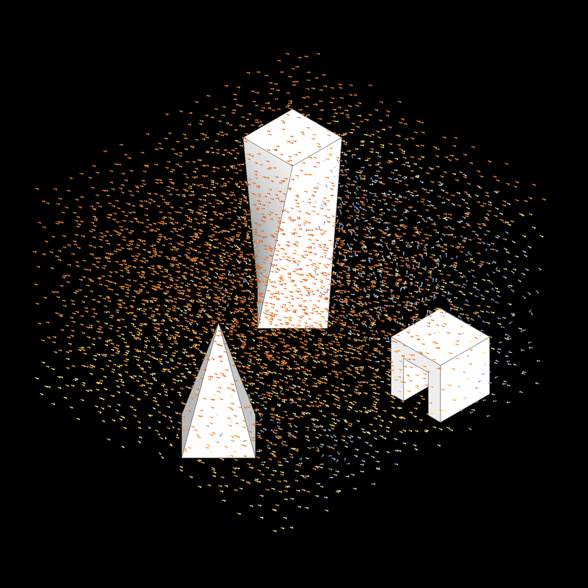

Luftstrom außen
Butterfly
⬤ Butterfly analysiert Windmuster in Städten via OpenFOAM-CFD – simuliert Strömungen durch Gebäudegeometrien. Erfassen lokaler Geschwindigkeiten/Richtungen. Basis für Außenraumplanung, Fußgängerkomfort und passive Klimastrategien – windoptimierte urbane Räume schaffen.
⬤ Butterfly analyzes wind patterns in cities using OpenFOAM CFD—simulates airflows through building geometries. Records local speeds/directions. Basis for outdoor space planning, pedestrian comfort, and passive climate strategies—creating wind-optimized urban spaces.